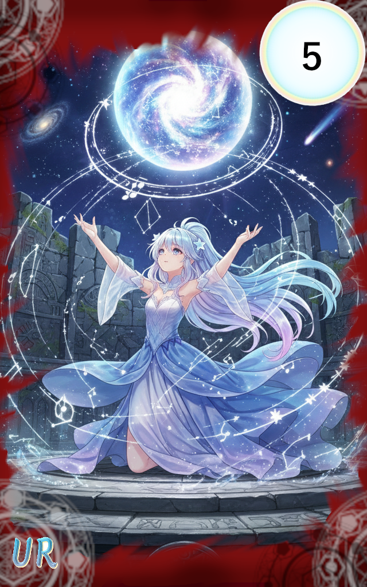

039_アストレイアの秘法

レアリティ: アルティメットレア (UR)
アストレイアの秘法
クラス: アウラ・コンポルタ
コスト:2
タイミング:好きなタイミング
効果:
あなたの《共鳴》数が5以下の場合、共鳴数を5にする。
《共鳴:3》山札の上から3枚をめくり、
その中からコスト5以下の【アウラ・コンポルタ】クラスのカードを3枚発動する。
※1.発動タイミングが合わない場合は《共鳴》値＋１のみを得る。
※2.山札がなく、カードがめくれない場合はデッキの再構築デッキの再構築：セメタリーのカードをシャッフルしてデッキに戻す。
その後、プレイヤーはアストラルコードの使用権を得る。を行う。
《共鳴:6》あなたはカードを3枚ドローする。
あなたの《共鳴》数が5以下の場合、共鳴数を5にする。
《共鳴:3》山札の上から3枚をめくり、
その中からコスト5以下の【アウラ・コンポルタ】クラスのカードを3枚発動する。
※1.発動タイミングが合わない場合は《共鳴》値＋１のみを得る。
※2.山札がなく、カードがめくれない場合はデッキの再構築デッキの再構築：セメタリーのカードをシャッフルしてデッキに戻す。
その後、プレイヤーはアストラルコードの使用権を得る。を行う。
《共鳴:6》あなたはカードを3枚ドローする。
ただ、星々の巡りはあるべき姿を取り戻す。
それは、世界の秩序そのものを書き換えると言われる神々の時代より伝わる「究極の秘法」。